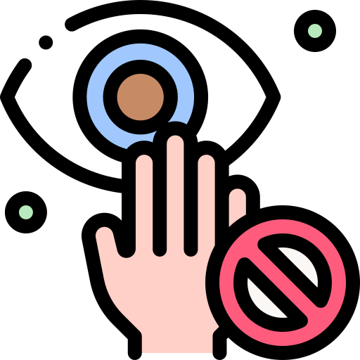
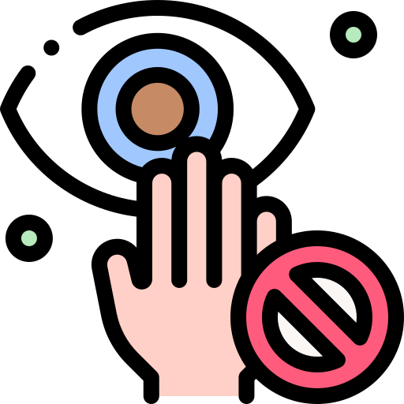

Mitet dhe faktet mbi virusin
Të marra nga Organizata botërore e shëndetit.
Virusi COVID-19 mund të transmetohet në zona me klimë të nxehtë dhe të lagësht
Nga provat e deritanishme, virusi COVID-19 mund të transmetohet në TË GJITHA kushtet atmosferike, përfshirë edhe ato me temperatura të nxehta dhe të ulëta.

A janë antibiotikët efektiv për të parandaluar apo për t'a trajtuar Koronavirusin?
Jo, antibiotikët nuk mbrojnë nga virusët, vetëm nga bakteriet. Koronavirusi i ri (COVID-19) eshte nje virus, keshtuqë, antibiotikët nuk duhet të përdoren si masë mbrojtëse(parandaluese).

A mundet që ngrënja e hudhrës të ndihmoj në parandalimin e infektimit me Koronavirusin e ri?
Hudhra mund të jetë një prej shumë ushqimeve të shëndetshme të cilat kanë në vete përbërës anti-bakterial. Sidoqoftë, deri tani ende nuk ka fakte që duke ngrënë hudhër njerëzit mund të mbrohen nga Koronavirusi i ri (COVID-19).
Simptomat dhe masat parandaluese

Disa nga simptomat që mund të jenë si paralajmërim
 Ethe
Ethe  Kollë e thatë
Kollë e thatë- Frymëmarrje të vështirësuar
- Temperaturë
- Dhimbje të fytit
- Kokëdhimbje të theksuar
- Zënie të hundës
- Rrjedhje në hundë
- Lodhje dhe dhimbje të muskujve
Para se të jemi të prekur nga këto simptoma, duhet që gjithsesi të kujdesemi për shëndetim tonë.Fakt që duhet theksuar është që shumica e njerëzve (rreth 80%) shërohen nga sëmundja pa pasur nevojë për trajtim të veçantë. Dhe si ta bëjmë këtë, shih më poshtë masat parandaluese të cilat janë të rekomanduara nga Organizata botërorer e shëndetit.
Masat parandaluese

Vetë karantinim
Vetë karantinimi do të thotë, qëndrimi larg njerëzve dhe evitimi i shperndarjes së virusit tek të tjerët nëse je i prekur me virus.

Pastro duart!
Duart përmbajnë bakterie dhe virus të shumtë, ngase ne prekim sipërfaqe të ndryshme gjatë ditës duke mos e ditur nëse në ato sipërfaqe ka apo jo virus.

Përdor sapun dhe/apo dezinfektues
Përdorimi i sapunit gjatë pastrimit të duarve eliminon/mbyt virusin. Nëse gjinedni jashtë dhe nuk keni si t'i pastroni duart, përdorni dezinfektues me 60%+ alkool.

Larg njerëzve 2 metra
Njerëzit, nëse nuk mbajnë maska dhe teshtijnë, spërklat që dalin nga goja ose bien në ndonjë sipërfaqe ose mund të arrijne në duart/fytyrën tënde dhe kështu të infektoheni.

Përdor maskë
Maska zakonisht përdoret prej njerëzve që janë të infektuar me virus por, nëse jeni jashtë duhet të mbani maskë në mënyrë që të mbroheni nga kushdo që mund të jetë i infektuar.
Evito turmat e njerëzve
Kurrë nuk e di se kush është i infektuar me virusin COVID-19 andaj, sa më larg tubimeve/turmave të njerëzve.

Mos e prek ftyrën me duar
Në duar mund të kesh spërkla te cilat i ke marrë nga ndonje sipërfaqe e prekur më parë dhe nëse prek fytyrën me ato duar, gjasat janë shumë të mëdha që të infektohesh.
Kujdesu për shëndetin mendor
Dicka tjeter me rëndësi, që gjithsesi duhet të shtojmë masën e kujdesit është edhe kujdesi mendor, qetësia dhe jo-paniku.
Vetë karantinim
Vetë karantinimi do të thotë, qëndrimi larg njerëzve dhe evitimi i shperndarjes së virusit tek të tjerët nëse je i prekur me virus.
Pastro duart!
Duart përmbajnë bakterie dhe virus të shumtë, ngase ne prekim sipërfaqe të ndryshme gjatë ditës duke mos e ditur nëse në ato sipërfaqe ka apo jo virus.
Përdor sapun dhe/apo dezinfektues
Përdorimi i sapunit gjatë pastrimit të duarve eliminon/mbyt virusin. Nëse gjinedni jashtë dhe nuk keni si t'i pastroni duart, përdorni dezinfektues me 60%+ alkool.
Larg njerëzve 2 metra
Njerëzit, nëse nuk mbajnë maska dhe teshtijnë, spërklat që dalin nga goja ose bien në ndonjë sipërfaqe ose mund të arrijne në duart/fytyrën tënde dhe kështu të infektoheni.
Përdor maskë
Maska zakonisht përdoret prej njerëzve që janë të infektuar me virus por, nëse jeni jashtë duhet të mbani maskë në mënyrë që të mbroheni nga kushdo që mund të jetë i infektuar.
Evito turmat e njerëzve
Kurrë nuk e di se kush është i infektuar me virusin COVID-19 andaj, sa më larg tubimeve/turmave të njerëzve.

Mos e prek ftyrën me duar
Në duar mund të kesh spërkla te cilat i ke marrë nga ndonje sipërfaqe e prekur më parë dhe nëse prek fytyrën me ato duar, gjasat janë shumë të mëdha që të infektohesh.
Kujdesu për shëndetin mendor
Dicka tjeter me rëndësi, që gjithsesi duhet të shtojmë masën e kujdesit është edhe kujdesi mendor, qetësia dhe jo-paniku.